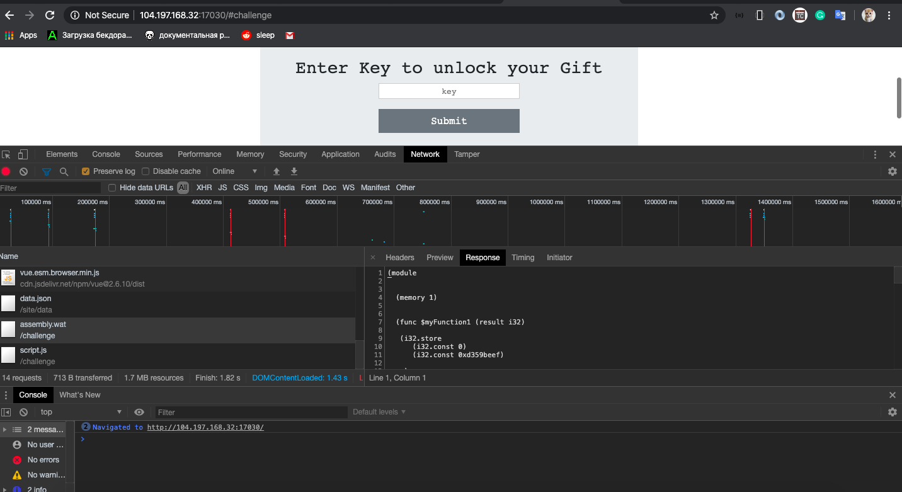
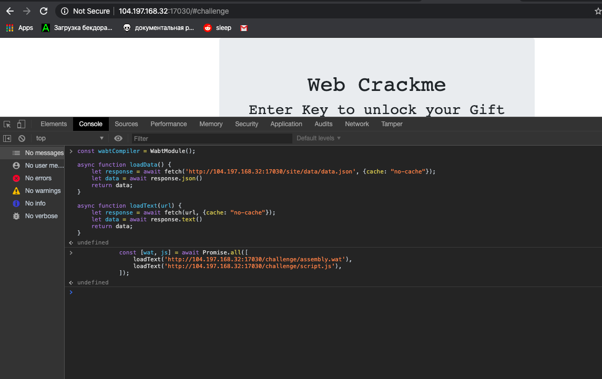
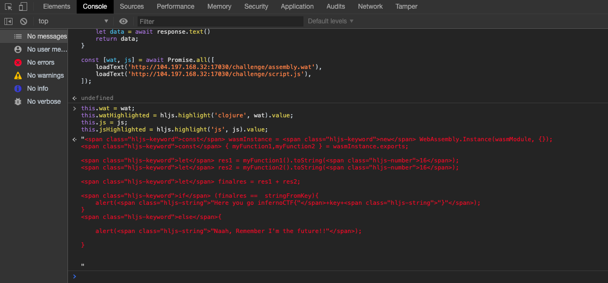
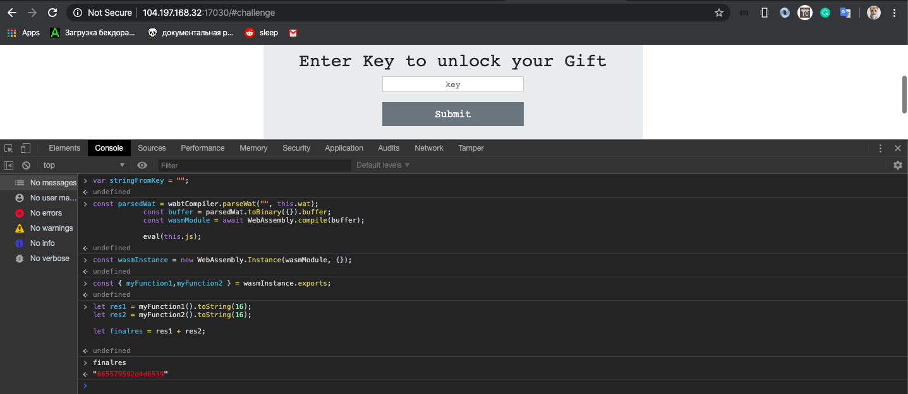
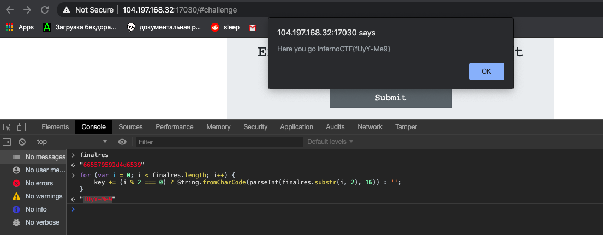
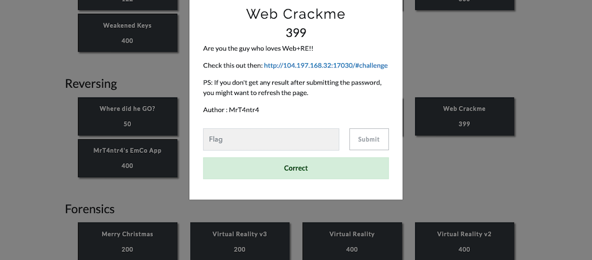

Pada chall infernoctf2019 ini, saya mencoba untuk menyelesaikan challange Web Crackme dengan point 399.
kita buka ke halaman web nya

kita bisa lihat terdapat beberapa script yang di load namun kita fokus ke 3 file
1. app.js
2. assembly.wat
3. script.js
App.js
kita coba lihat beberapa potongan dari app.js, terdapat methods dan memanggil sebuah fungsi selectExample & execute
. . . .
methods: {
async selectExample(example) {
window.location.hash = example;
this.selectedExample = example;
const [wat, js] = await Promise.all([
loadText(example + '/assembly.wat'),
loadText(example + '/script.js'),
]);
this.wat = wat;
this.watHighlighted = hljs.highlight('clojure', wat).value;
this.js = js;
this.jsHighlighted = hljs.highlight('js', js).value;
return 0;
},
async execute() {
var key = document.getElementById('key').value;
var stringFromKey = "";
for (var i = 0; i < key.length; i++) {
stringFromKey+=key.charCodeAt(i).toString(16);
}
const parsedWat = wabtCompiler.parseWat("", this.wat);
const buffer = parsedWat.toBinary({}).buffer;
const wasmModule = await WebAssembly.compile(buffer);
eval(this.js);
return 0;
}
}
mari kita pecah per statement pada fungsi selectExample , bisa kita lihat code tersebut melakukan request http untuk meload
sebuah script assembly.wat dan script.js kemudian akan di set ke variable wat & js
kemudian di tampung kedalam set kedalam this.wat & this.js
const [wat, js] = await Promise.all([
loadText(example + '/assembly.wat'),
loadText(example + '/script.js'),
]);
this.wat = wat;
this.watHighlighted = hljs.highlight('clojure', wat).value;
this.js = js;
this.jsHighlighted = hljs.highlight('js', js).value;
kemudian fungsi execute di jalankan, semua inputan user pada textbox akan di
set kedalam variable key kemudian di convert kedalam hex.
dan nanti akan di bandingkan value nya dengan nilai hex yang ada di dalam code assembly.wat
var key = document.getElementById('key').value;
var stringFromKey = "";
for (var i = 0; i < key.length; i++) {
stringFromKey+=key.charCodeAt(i).toString(16);
}
const parsedWat = wabtCompiler.parseWat("", this.wat);
const buffer = parsedWat.toBinary({}).buffer;
const wasmModule = await WebAssembly.compile(buffer);
eval(this.js);
assembly.wat
berikut ini adalah kode yang assembly yang di load tadi, terdapat 2 buah fungsi
myFunction1 & myFunction2
(module
(memory 1)
(func $myFunction1 (result i32)
(i32.store
(i32.const 0)
(i32.const 0xd359beef)
)
(i32.store
(i32.const 3)
(i32.const 0x5579)
)
(i32.store
(i32.const 5)
(i32.const 0x66)
)
(i32.load
(i32.const 2)
)
)
(func $myFunction2 (result i32)
(i32.store
(i32.const 0)
(i32.const 0xc939ba2d)
)
(i32.store
(i32.const 3)
(i32.const 0x7165)
)
(i32.store16
(i32.const 4)
(i32.const 0x2D4D)
)
(i32.load
(i32.const 2)
)
)
(export "myFunction1" (func $myFunction1))
(export "myFunction2" (func $myFunction2))
)
pada fungsi myFunction1,
(module
(memory 1)
(func $myFunction1 (result i32)
(i32.store
(i32.const 0)
(i32.const 0xd359beef)
)
(i32.store
(i32.const 3)
(i32.const 0x5579)
)
(i32.store
(i32.const 5)
(i32.const 0x66)
)
(i32.load
(i32.const 2)
)
)
pada bagian i32.store -> i32.const 0 value tersebut di isi 0xd359beef
ketika di load maka yang akan terjadi akan di reverse menjadi 0xefbe59d3
pada bagain
i32.store ->
i32.const 3 value isi
0x5579
maka yang akan terjadi akan di reverse menjadi
0x7955 dan pada index ke 3 maka
akan di replace dengan nilai baru
dan pada bagian
i32.store ->
i32.const 5 value tersebut di isi
0x66
maka pada index ke 5 di isi dengan value 66
| 0 |
1 |
2 |
3 |
4 |
5 |
| ef |
be |
59 |
79 |
55 |
66 |
maka fungsi
myFunction1 memiliki nilai
0xefbe59795566
kemudian pada bagian
i32.load ->
(i32.const 2)
maka yang terjadi adalah di mengambil
0x59795566
kemudian di reverse
0x66557959
dan ini berlaku untuk fungsi
myFunction2
memiliki nilai
0x2d4d6539
script.js
pada bagian ini bisa kita lihat fungsi pada wasm tadi di load kemudian setiap
fungsi akan di set kesebuah variable
res1 &
res2 dan di gabung menjadi 1 variable yaitu
finalres
const wasmInstance = new WebAssembly.Instance(wasmModule, {});
const { myFunction1,myFunction2 } = wasmInstance.exports;
let res1 = myFunction1().toString(16);
let res2 = myFunction2().toString(16);
let finalres = res1 + res2;
if (finalres == stringFromKey){
alert("Here you go infernoCTF{"+key+"}");
}
else{
alert("Naah, Remember I'm the future!!");
}
untuk membuktikan nya kita coba load module tadi via console


kita coba ambil variable finalres, nilai nya sama
665579592d4d6539

kemudian langkah terakhir adalah kita mencoba untuk mendecode nilai hex tersebut,
saya membuat sebuah snipet code seperti ini
let key = "";
for (var i = 0; i < finalres.length; i++) {
key += (i % 2 === 0) ? String.fromCharCode(parseInt(finalres.substr(i, 2), 16)) : '';
}
kemudian kita coba run code tersebut

dan kita coba input flag tersebut
infernoCTF{fUyY-Me9}

Sekain dan terimakasih karena meluangkan waktu untuk membaca artikel ini :)